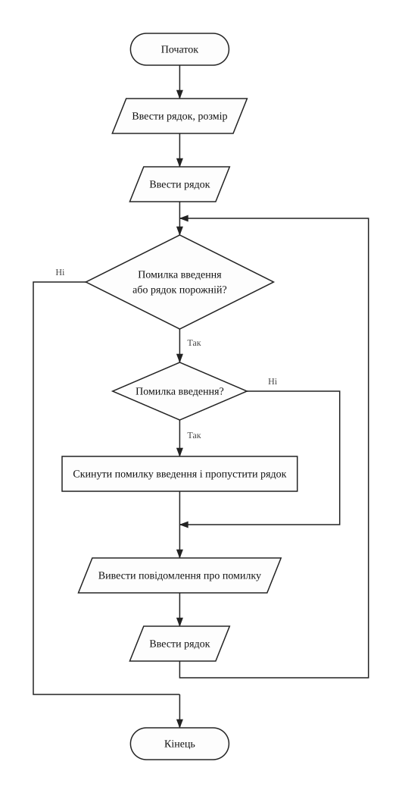
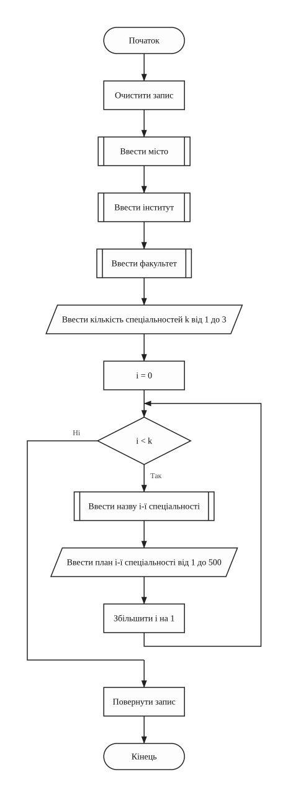
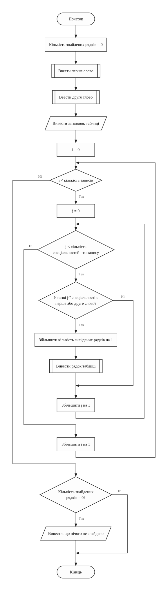
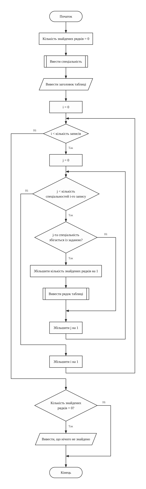
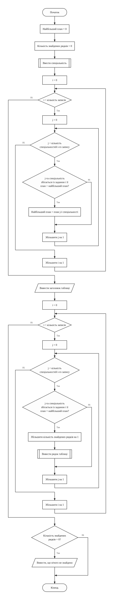
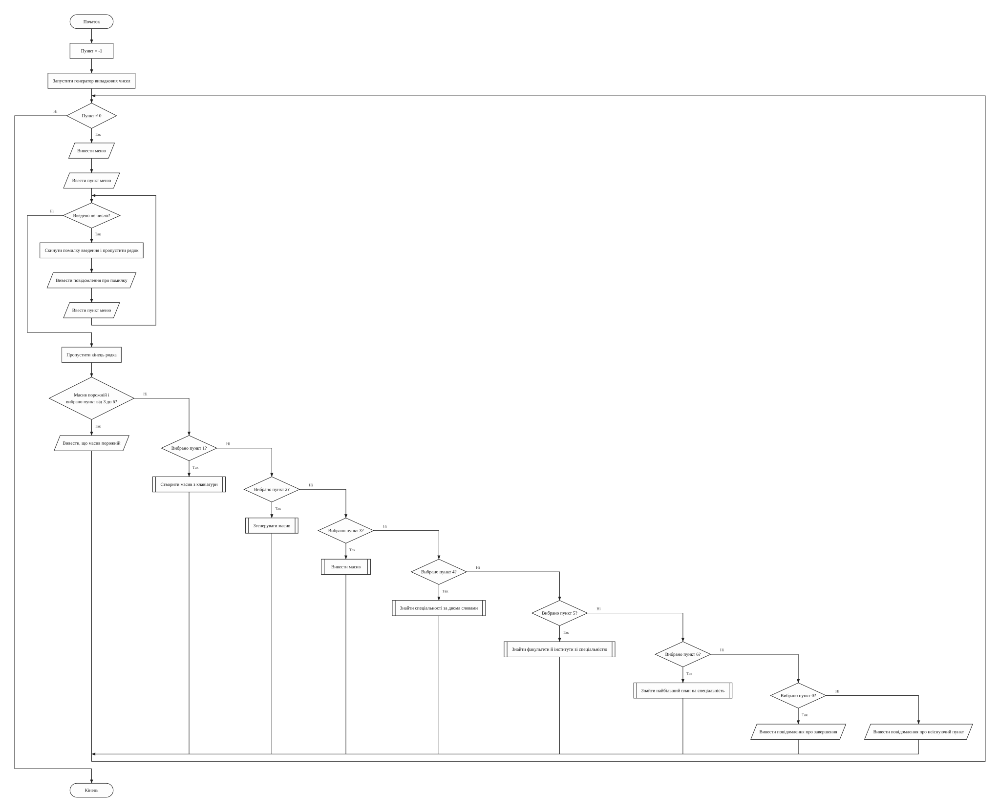
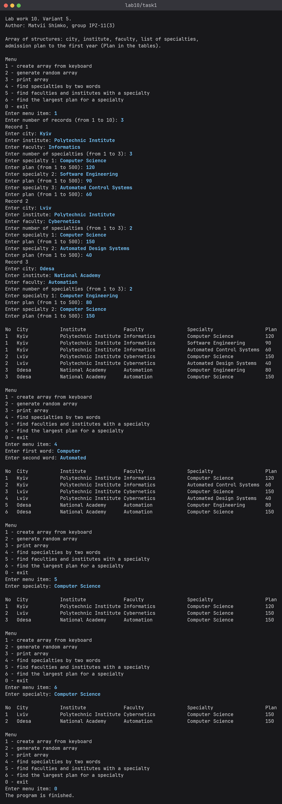
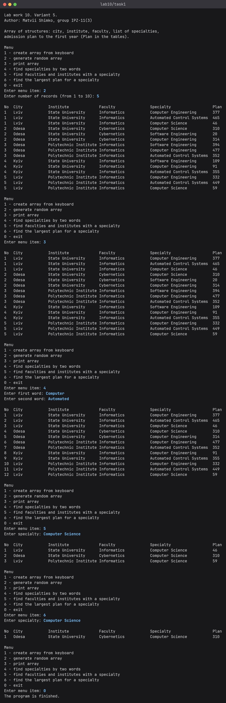
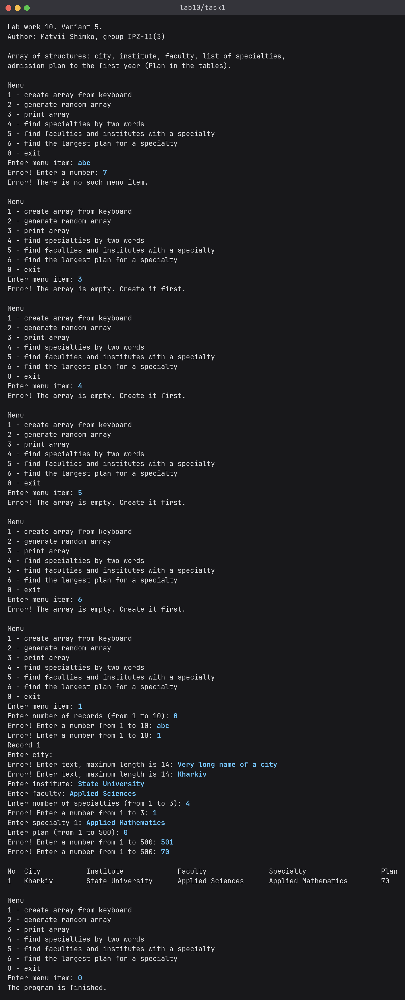
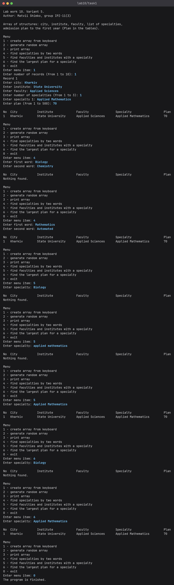

Основи програмування
Звіт до лабораторної роботи №10
Структури, масиви структур та об'єднання • Варіант 5
Оберіть розділ звіту
Лабораторна робота №10 / 01 з 08
1. Мета роботи
- Вивчити особливості типу даних "структура" і масивів структур.
- Опанувати передачу структур у функції, повернення структур із функцій та доступ до полів через покажчик.
- Навчитися розробляти програми з меню, які виконують пошук у масиві структур за ключами, заданими з клавіатури.
Лабораторна робота №10 / 02 з 08
2. Умова задачі
Варіант 5
Варіант 5 (у таблиці 25 варіантів, 30 - 25 = 5).
Створити масив структур. Кожна структура складається з таких елементів: місто, інститут, факультет, список спеціальностей, план прийому на перший курс. Реалізувати запити, визначивши:
- список спеціальностей, що містять у своїй назві слова "комп'ютерний" або "автоматизований";
- факультети й інститути, де є задана спеціальність;
- факультет, інститут і місто, де на вказану користувачем спеціальність виділено найбільше місць.
Результати запитів вивести у вигляді таблиць.
Вимоги до програми:
- програма повинна мати меню команд, виконання яких здійснювати через виклики функцій;
- кожна функція має визначати окрему обмежену дію: створення масиву структур, виведення масиву структур, пошук і виведення результатів запитів;
- застосування покажчиків на масив структур та окремі структури схвалюється;
- створення масиву структур здійснювати через введення з клавіатури або генерацію рядків і чисел за допомогою генератора псевдовипадкових чисел;
- створений масив структур обов'язково вивести на екран у табличній формі, заголовок таблиці має відповідати переліку полів структури;
- пошук по масиву структур здійснювати, задаючи ключі пошуку з клавіатури;
- результати запитів виводити в табличній формі: заголовок таблиці виводиться один раз, далі виводяться дані результату пошуку;
- бібліотеку стандартних шаблонів STL використовувати заборонено, дозволено функції заголовних файлів string.h, ctype.h, stdlib.h.
Лабораторна робота №10 / 03 з 08
3. Аналіз задачі
Варіант 5
Для розв'язання задачі потрібен масив записів про факультети. На кожну спеціальність
виділено свій план прийому, тому спеціальність зберігається в окремій структурі
Specialty з полями name і plan. Структура
Faculty містить місто, інститут, факультет, масив до 3 спеціальностей та їх
кількість. Усі записи лежать у глобальному масиві records, їх може бути до 10.
Програма виводить текст англійською, тому назви в записах теж англійські. Слову "комп'ютерний" відповідає Computer, а слову "автоматизований" відповідає Automated.
Масив можна ввести з клавіатури або згенерувати. Функції inputRecord і
generateRecord заповнюють один запис і повертають його як структуру. Під час
генерації місто, інститут і факультет вибираються через rand() зі сталих списків.
Спеціальності беруться поспіль зі списку з 4 назв, починаючи з випадкової, тому в одному записі
вони не повторюються. План є випадковим числом від 1 до 500.
Кожен рядок таблиці показує запис з однією спеціальністю. Запис із трьома спеціальностями
займає три рядки з однаковим номером. Рядок виводить функція printRow, яка отримує
запис через покажчик. У запитах заголовок таблиці виводиться один раз.
Запит 1 шукає спеціальності, у назві яких є хоча б одне з двох слів. Обидва слова вводяться з
клавіатури. Для умови варіанта беруться Computer і Automated. Шукає їх функція
strstr. У запитах 2 і 3 strcmp порівнює всю назву. Запит 3 проходить
масив двічі: спочатку знаходить найбільший план, потім виводить рядки з таким планом.
Якщо такий план є в кількох записах, виводяться всі. Великі й малі літери розрізняються, тому ключ
треба вводити так, як назву записано в даних.
Числа вводяться через функцію inputNumber. Якщо введено літери або число поза
межами, cin.fail() показує помилку, і введення повторюється. Функція
inputText так само повторює порожній або задовгий рядок. Номер, якого
немає в меню, обробляє default в операторі switch. Пункти 3-6 не
працюють, поки масив порожній: програма виводить повідомлення. Якщо запит нічого не знайшов, після
заголовка виводиться Nothing found.
Таблиця 1 - Функції програми
| Функція | Призначення |
|---|---|
main | виклик основних кроків програми |
welcome | виведення даних про автора та умови задачі |
runMenu | меню і виклик вибраної дії |
inputNumber | введення цілого числа із заданих меж |
inputText | введення непорожнього рядка заданої довжини |
inputRecord | введення одного запису, повертає структуру |
generateRecord | створення випадкового запису, повертає структуру |
createArray | створення масиву з клавіатури або генерацією |
printRow | виведення рядка таблиці, запис передається через покажчик |
printArray | виведення масиву таблицею |
findByWords | запит 1: спеціальності за двома словами |
findBySpecialty | запит 2: факультети й інститути із заданою спеціальністю |
findMaxPlan | запит 3: найбільший план на задану спеціальність |
Джерела: Ковалюк Т.В. Алгоритмізація та програмування, 2024; Ковалюк Т.В., Петрівський В.Я. Гарний стиль програмування мовами C, C++, C#, 2025; Deitel P., Deitel H. C++ How to Program.
Лабораторна робота №10 / 04 з 08
4. Блок-схеми алгоритмів
Варіант 5

welcome (виведення даних про автора та умови задачі)
inputNumber (введення цілого числа із заданих меж)

inputText (введення непорожнього рядка)

inputRecord (введення одного запису з клавіатури)
generateRecord (створення одного випадкового запису)
printRow (виведення рядка таблиці)
printArray (виведення масиву таблицею)
createArray (створення масиву і його виведення)

findByWords (запит 1: спеціальності за двома словами)

findBySpecialty (запит 2: факультети й інститути зі спеціальністю)

findMaxPlan (запит 3: найбільший план на спеціальність)

runMenu (меню програми)
main (головна функція)Лабораторна робота №10 / 05 з 08
5. Текст програми
Варіант 5
Файл task1.cpp
/////////////////////////////////////////////////////////////////////
// Ім'я файлу: task1.cpp
// Автор: Шимко Матвій, гр. ІПЗ-11(3)
// Номер версії модуля: version 2
// Запланована ціль: лабораторна робота №10, варіант 5.
// Створити масив структур про факультети інститутів
// і виконати запити за спеціальностями.
/////////////////////////////////////////////////////////////////////
#include <cstdlib>
#include <cstring>
#include <ctime>
#include <iomanip>
#include <iostream>
using namespace std;
//=========== константи
const int MAX_RECORDS = 10; // найбільша кількість записів масиву
const int MAX_SPECIALTIES = 3; // найбільша кількість спеціальностей у записі
const int CITY_LENGTH = 15; // довжини рядків разом із символом кінця рядка,
const int INSTITUTE_LENGTH = 22; // вони ж ширини колонок таблиці
const int FACULTY_LENGTH = 22;
const int SPECIALTY_LENGTH = 27;
const int NUMBER_WIDTH = 4; // ширина колонки з номером
const int MAX_PLAN = 500; // найбільший план прийому на спеціальність
const int CITY_TOTAL = 3; // кількість назв для генерації
const int INSTITUTE_TOTAL = 2;
const int FACULTY_TOTAL = 2;
const int SPECIALTY_TOTAL = 4;
// назви, з яких генератор випадкових чисел складає записи
const char CITIES[CITY_TOTAL][CITY_LENGTH] = {"Kyiv", "Lviv", "Odesa"};
const char INSTITUTES[INSTITUTE_TOTAL][INSTITUTE_LENGTH] = {
"Polytechnic Institute", "State University"};
const char FACULTIES[FACULTY_TOTAL][FACULTY_LENGTH] = {"Informatics",
"Cybernetics"};
const char SPECIALTIES[SPECIALTY_TOTAL][SPECIALTY_LENGTH] = {
"Computer Science", "Software Engineering", "Computer Engineering",
"Automated Control Systems"};
// заголовок таблиці, колонки відповідають ширинам вище
const char TABLE_HEADER[] = "No City Institute "
"Faculty Specialty "
"Plan";
//=========== структури
struct Specialty // спеціальність зі своїм планом прийому
{
char name[SPECIALTY_LENGTH]; // назва спеціальності
int plan; // план прийому на перший курс
};
struct Faculty // один запис масиву
{
char city[CITY_LENGTH]; // місто
char institute[INSTITUTE_LENGTH]; // інститут
char name[FACULTY_LENGTH]; // факультет
Specialty specialties[MAX_SPECIALTIES]; // список спеціальностей
int specialtyCount; // кількість спеціальностей
};
//=========== глобальні змінні
Faculty records[MAX_RECORDS] = {}; // масив структур
int recordCount = 0; // кількість записів у масиві
/*
* Функція виводить дані про автора та умову задачі
* Параметри: немає
* Значення, що повертаються: немає
*/
void welcome()
{
cout << "Lab work 10. Variant 5." << endl;
cout << "Author: Matvii Shimko, group IPZ-11(3)" << endl << endl;
cout
<< "Array of structures: city, institute, faculty, list of specialties,"
<< endl;
cout << "admission plan to the first year (Plan in the tables)." << endl;
}
/*
* Функція вводить ціле число із заданих меж. Якщо введено не число
* або число поза межами, введення повторюється
* Параметри: minValue, maxValue - межі числа
* Значення, що повертаються: введене число
*/
int inputNumber(int minValue, int maxValue)
{
int number = 0;
cin >> number;
while (cin.fail() || number < minValue || number > maxValue)
{
cin.clear(); // скинути помилку введення
cin.ignore(1000, '\n'); // і пропустити неправильний рядок
cout << "Error! Enter a number from " << minValue << " to " << maxValue
<< ": ";
cin >> number;
}
cin.ignore(1000, '\n'); // прибрати кінець рядка перед cin.getline
return number;
}
/*
* Функція вводить непорожній рядок. Якщо рядок порожній або задовгий,
* введення повторюється
* Параметри: text - куди записати рядок; maxLength - розмір масиву text
* Значення, що повертаються: немає
*/
void inputText(char* text, int maxLength)
{
cin.getline(text, maxLength);
while (cin.fail() || strlen(text) == 0)
{
if (cin.fail())
{
cin.clear(); // скинути помилку введення
cin.ignore(1000, '\n'); // і пропустити залишок рядка
}
cout << "Error! Enter text, maximum length is " << maxLength - 1
<< ": ";
cin.getline(text, maxLength);
}
}
/*
* Функція вводить з клавіатури один запис
* Параметри: немає
* Значення, що повертаються: заповнена структура
*/
Faculty inputRecord()
{
Faculty record = {};
cout << "Enter city: ";
inputText(record.city, CITY_LENGTH);
cout << "Enter institute: ";
inputText(record.institute, INSTITUTE_LENGTH);
cout << "Enter faculty: ";
inputText(record.name, FACULTY_LENGTH);
cout << "Enter number of specialties (from 1 to " << MAX_SPECIALTIES
<< "): ";
record.specialtyCount = inputNumber(1, MAX_SPECIALTIES);
for (int i = 0; i < record.specialtyCount; i++)
{
cout << "Enter specialty " << i + 1 << ": ";
inputText(record.specialties[i].name, SPECIALTY_LENGTH);
cout << "Enter plan (from 1 to " << MAX_PLAN << "): ";
record.specialties[i].plan = inputNumber(1, MAX_PLAN);
}
return record;
}
/*
* Функція складає один запис із випадкових назв і чисел. Спеціальності
* беруться зі списку поспіль, тому в записі вони не повторюються
* Параметри: немає
* Значення, що повертаються: заповнена структура
*/
Faculty generateRecord()
{
Faculty record = {};
int firstIndex = rand() % SPECIALTY_TOTAL; // перша спеціальність запису
strcpy(record.city, CITIES[rand() % CITY_TOTAL]);
strcpy(record.institute, INSTITUTES[rand() % INSTITUTE_TOTAL]);
strcpy(record.name, FACULTIES[rand() % FACULTY_TOTAL]);
record.specialtyCount = MAX_SPECIALTIES;
for (int i = 0; i < record.specialtyCount; i++)
{
strcpy(record.specialties[i].name,
SPECIALTIES[(firstIndex + i) % SPECIALTY_TOTAL]);
record.specialties[i].plan = 1 + rand() % MAX_PLAN;
}
return record;
}
/*
* Функція виводить рядок таблиці: запис з однією його спеціальністю
* Параметри: record - покажчик на запис; index - номер спеціальності;
* number - номер у таблиці
* Значення, що повертаються: немає
*/
void printRow(Faculty* record, int index, int number)
{
cout << left << setw(NUMBER_WIDTH) << number << setw(CITY_LENGTH)
<< record->city << setw(INSTITUTE_LENGTH) << record->institute
<< setw(FACULTY_LENGTH) << record->name << setw(SPECIALTY_LENGTH)
<< record->specialties[index].name << record->specialties[index].plan
<< endl;
}
/*
* Функція виводить масив структур таблицею
* Параметри: немає
* Значення, що повертаються: немає
*/
void printArray()
{
cout << endl << TABLE_HEADER << endl;
for (int i = 0; i < recordCount; i++)
{
for (int j = 0; j < records[i].specialtyCount; j++)
{
printRow(&records[i], j, i + 1);
}
}
}
/*
* Функція створює масив і виводить його таблицею
* Параметри: isRandom - true для генерації, false для введення з клавіатури
* Значення, що повертаються: немає
*/
void createArray(bool isRandom)
{
cout << "Enter number of records (from 1 to " << MAX_RECORDS << "): ";
recordCount = inputNumber(1, MAX_RECORDS);
for (int i = 0; i < recordCount; i++)
{
if (isRandom)
{
records[i] = generateRecord();
}
else
{
cout << "Record " << i + 1 << endl;
records[i] = inputRecord();
}
}
printArray();
}
/*
* Функція виводить спеціальності, у назвах яких є хоча б одне
* з двох слів, заданих з клавіатури
* Параметри: немає
* Значення, що повертаються: немає
*/
void findByWords()
{
char firstWord[SPECIALTY_LENGTH] = "";
char secondWord[SPECIALTY_LENGTH] = "";
int count = 0; // кількість знайдених рядків
cout << "Enter first word: ";
inputText(firstWord, SPECIALTY_LENGTH);
cout << "Enter second word: ";
inputText(secondWord, SPECIALTY_LENGTH);
cout << endl << TABLE_HEADER << endl;
for (int i = 0; i < recordCount; i++)
{
for (int j = 0; j < records[i].specialtyCount; j++)
{
if (strstr(records[i].specialties[j].name, firstWord) != NULL
|| strstr(records[i].specialties[j].name, secondWord) != NULL)
{
count++;
printRow(&records[i], j, count);
}
}
}
if (count == 0)
{
cout << "Nothing found." << endl;
}
}
/*
* Функція виводить факультети й інститути, де є задана спеціальність
* Параметри: немає
* Значення, що повертаються: немає
*/
void findBySpecialty()
{
char specialty[SPECIALTY_LENGTH] = "";
int count = 0; // кількість знайдених рядків
cout << "Enter specialty: ";
inputText(specialty, SPECIALTY_LENGTH);
cout << endl << TABLE_HEADER << endl;
for (int i = 0; i < recordCount; i++)
{
for (int j = 0; j < records[i].specialtyCount; j++)
{
if (strcmp(records[i].specialties[j].name, specialty) == 0)
{
count++;
printRow(&records[i], j, count);
}
}
}
if (count == 0)
{
cout << "Nothing found." << endl;
}
}
/*
* Функція знаходить найбільший план на задану спеціальність і виводить
* факультет, інститут і місто. Якщо такий план є в кількох записах,
* виводяться всі
* Параметри: немає
* Значення, що повертаються: немає
*/
void findMaxPlan()
{
char specialty[SPECIALTY_LENGTH] = "";
int maxPlan = 0; // найбільший план на спеціальність
int count = 0; // кількість знайдених рядків
cout << "Enter specialty: ";
inputText(specialty, SPECIALTY_LENGTH);
for (int i = 0; i < recordCount; i++)
{
for (int j = 0; j < records[i].specialtyCount; j++)
{
if (strcmp(records[i].specialties[j].name, specialty) == 0
&& records[i].specialties[j].plan > maxPlan)
{
maxPlan = records[i].specialties[j].plan;
}
}
}
cout << endl << TABLE_HEADER << endl;
for (int i = 0; i < recordCount; i++)
{
for (int j = 0; j < records[i].specialtyCount; j++)
{
if (strcmp(records[i].specialties[j].name, specialty) == 0
&& records[i].specialties[j].plan == maxPlan)
{
count++;
printRow(&records[i], j, count);
}
}
}
if (count == 0)
{
cout << "Nothing found." << endl;
}
}
/*
* Функція виводить меню і викликає вибрану дію, поки не вибрано вихід
* Параметри: немає
* Значення, що повертаються: немає
*/
void runMenu()
{
int choice = -1;
srand(time(NULL));
while (choice != 0)
{
cout << endl << "Menu" << endl;
cout << "1 - create array from keyboard" << endl;
cout << "2 - generate random array" << endl;
cout << "3 - print array" << endl;
cout << "4 - find specialties by two words" << endl;
cout << "5 - find faculties and institutes with a specialty" << endl;
cout << "6 - find the largest plan for a specialty" << endl;
cout << "0 - exit" << endl;
cout << "Enter menu item: ";
cin >> choice;
while (cin.fail())
{
cin.clear(); // скинути помилку введення
cin.ignore(1000, '\n'); // і пропустити неправильний рядок
cout << "Error! Enter a number: ";
cin >> choice;
}
cin.ignore(1000, '\n'); // прибрати кінець рядка перед cin.getline
if (recordCount == 0 && choice >= 3 && choice <= 6)
{
cout << "Error! The array is empty. Create it first." << endl;
}
else
{
switch (choice)
{
case 1 : createArray(false); break;
case 2 : createArray(true); break;
case 3 : printArray(); break;
case 4 : findByWords(); break;
case 5 : findBySpecialty(); break;
case 6 : findMaxPlan(); break;
case 0 : cout << "The program is finished." << endl; break;
default : cout << "Error! There is no such menu item." << endl;
}
}
}
}
int main()
{
welcome();
runMenu();
return 0;
}
Лабораторна робота №10 / 06 з 08
6. Результати виконання роботи
Варіант 5
Перший рисунок показує створення масиву з клавіатури і всі три запити. На другому масив згенеровано, тому його значення змінюються від запуску до запуску. Останні два рисунки показують обробку некоректних даних, випадок, коли нічого не знайдено, і вплив регістру літер на пошук.








Лабораторна робота №10 / 07 з 08
7. Аналіз достовірності результатів
Контрольний приклад
Запити перевірено вручну на масиві з трьох записів. Результат кожного запиту спочатку визначено за таблицею вхідних даних, а потім порівняно з тим, що вивела програма. Останні шість рядків другої таблиці взято з окремого запуску, де в масиві один запис: Kharkiv, State University, Applied Sciences, Applied Mathematics, план 70.
Таблиця 2 - Вхідні дані контрольного прикладу
| Запис | Місто, інститут, факультет | Спеціальності та план |
|---|---|---|
| 1 | Kyiv, Polytechnic Institute, Informatics | Computer Science 120; Software Engineering 90; Automated Control Systems 60 |
| 2 | Lviv, Polytechnic Institute, Cybernetics | Computer Science 150; Automated Design Systems 40 |
| 3 | Odesa, National Academy, Automation | Computer Engineering 80; Computer Science 150 |
Таблиця 3 - Ручна перевірка запитів
| Запит і ключ | Очікуваний результат | Результат програми |
|---|---|---|
| Запит 1: Computer, Automated | усі 7 спеціальностей, крім Software Engineering, тобто 6 рядків | 6 рядків, Software Engineering немає |
| Запит 2: Computer Science | 3 рядки: Informatics, Cybernetics, Automation | 3 рядки, збігається |
| Запит 3: Computer Science | max(120, 150, 150) = 150, два рядки: Cybernetics у Lviv, Automation в Odesa | два рядки з планом 150, збігається |
| Запит 1: Biology, Chemistry | нічого не знайдено | Nothing found. |
| Запит 1: Mathematics, Automated | Applied Mathematics | Applied Mathematics, план 70 |
| Запит 2: Applied Mathematics | 1 рядок: Applied Sciences, State University | 1 рядок, збігається |
| Запит 2: applied mathematics | нічого не знайдено, регістр має значення | Nothing found. |
| Запит 2 і 3: Biology | такої спеціальності немає | Nothing found. |
| Запит 3: Applied Mathematics | єдиний план 70 | 1 рядок, план 70 |
Некоректні дані і випадковий масив
Таблиця 4 - Перевірка обробки некоректних даних
| Вхід | Очікувана реакція | Результат програми |
|---|---|---|
| меню: abc | повторити введення | Error! Enter a number |
| меню: 7 | такого пункту немає | Error! There is no such menu item. |
| пункти 3, 4, 5, 6 до створення масиву | масив порожній | Error! The array is empty. Create it first. |
| кількість записів 0, abc | повторити введення | Error! Enter a number from 1 to 10 |
| порожнє місто; місто з 24 символів | повторити введення | Error! Enter text, maximum length is 14 |
| кількість спеціальностей 4 | повторити введення | Error! Enter a number from 1 to 3 |
| план 0, 501 | повторити введення | Error! Enter a number from 1 to 500 |
Результати для випадкового масиву можна перевірити за таблицею на тому самому рисунку. У запиті 1 є всі рядки зі словами Computer і Automated, у запиті 2 усі рядки Computer Science, а запит 3 показує найбільший план цієї спеціальності. Спеціальності в одному записі не повторюються, плани лежать у межах від 1 до 500.
Лабораторна робота №10 / 08 з 08
8. Висновки
У ході лабораторної роботи розглянуто структури і масиви структур. Розроблено програму з меню,
яка створює масив з клавіатури або генератором випадкових чисел, виводить його таблицею і виконує
три запити за спеціальностями. Функції введення і генерації повертають структуру, а
printRow отримує запис через покажчик.
Результати запитів знайдено вручну на контрольному прикладі, вони збіглися з виведенням програми. Пошук розрізняє великі й малі літери, тому ключі треба вводити так, як назви записані в даних.